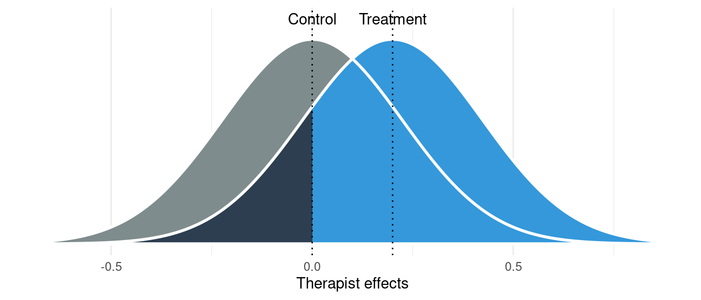

![]()
knitr::opts_chunk$set(
message = FALSE,
warning = FALSE,
cache = TRUE
)A Causal Inference Perspective on Therapist Effects—Online Supplement
Introduction
This online supplement for A Causal Inference Perspective on Therapist Effects (Magnusson, 2023, in preparation) contains the code for all calculations, simulations, and figures presented in the article.
library(ggplot2)
library(readr)
library(dplyr)
library(tidyr)
library(purrr)
library(powerlmm)
library(knitr)
library(parallel)
library(lme4)
library(lmerTest)
library(svglite)
library(brms)
library(parallel)Therapist-Outcome Confounding Simulation
The functions below were used to simulate a data set with therapist effects and a therapist-outcome confounder.
#' Get the mean difference between prognostic groups
#'
#' @param sd the SD added to the therapist level due to the confounder
#' @param n2 the number of patients per therapist
#'
#' @returns the mean difference between the two binary groups
#' @examples
#' n2 <- 50
#' M <- solve_for_mean(0.075, n2)
#' # we solve for M in this
#' sd(c(rep(0, n2), rep(M, n2)))
solve_for_mean <- function(sd, n2) {
2 * sqrt(sd^2 * (n2 * 2 - 1) / (n2 * 2))
}
#' Get the therapist SD from thee ICC
#'
#' @param icc the ICC
#' @param sd_error the error SD
#'
#' @returns the random therapist SD
get_therapist_sd_from_icc <- function(icc, sd_error) {
(sqrt(icc) * sd_error) / (sqrt(1 - icc))
}
#' Simulate confounded therapist effects
#'
#' @param n1
#' @param n2
#' @param sd_therapist
#' @param sd_therapist_confounding
#' @param sd_error
#' @param ATE
#'
#' @returns a data.frame
simulate_therapist_effect_confounding <- function(
n1,
n2,
sd_therapist,
sd_therapist_confounding,
sd_error,
ATE,
...) {
tot_n <- 2 * n1 * n2
b_pre_prognosis <- solve_for_mean(
sd = sd_therapist_confounding,
n2 = n2
)
Z <- rep(c(0, 1), each = n1 * n2)
therapist_cc <- 1:n2
therapist_tx <- (n2 + 1):(n2 * 2)
therapist_effect_cc <- rnorm(n2, 0, sd_therapist)
therapist_effect_tx <- rnorm(n2, 0, sd_therapist)
therapist_effects <- c(therapist_effect_cc, therapist_effect_tx)
error <- rnorm(tot_n, 0, sd_error)
d <- data.frame(
Z,
pre_prognosis = rbinom(tot_n, 1, 0.5),
therapist = NA,
therapist_random = NA
)
d$therapist <- ifelse(
Z == 0,
# control
ifelse(
d$pre_prognosis == 0,
sample(
x = 1:(n2 / 2),
size = n1 * n2 / 2,
replace = TRUE
),
sample(
x = (n2 / 2 + 1):(n2),
size = n1 * n2 / 2,
replace = TRUE
)
),
# treatment
ifelse(
d$pre_prognosis == 0,
sample(
x = 1:(n2 / 2),
size = n1 * n2 / 2,
replace = TRUE
),
sample(
x = (n2 / 2 + 1):(n2),
size = n1 * n2 / 2,
replace = TRUE
)
) + n2
)
d$therapist_random[d$Z == 0] <- sample(
x = therapist_cc,
size = n1 * n2,
replace = TRUE
)
d$therapist_random[d$Z == 1] <- sample(
x = therapist_tx,
size = n1 * n2,
replace = TRUE
)
# non-random allocation of therapists
d$therapist_effect <- therapist_effects[d$therapist]
d$y <- 10 +
d$Z * ATE +
d$therapist_effect +
error +
d$pre_prognosis * b_pre_prognosis
# random allocation of therapists
d$therapist_effect_random <- therapist_effects[d$therapist_random]
d$y_random <- 10 +
d$Z * ATE +
d$therapist_effect_random +
error +
d$pre_prognosis * b_pre_prognosis
# required by powerlmm
d$time <- 0
d
}To run the simulation we pass the simulation function simulate_therapist_effect_confounding and use a custom powerlmm model to setup all the parameters.
ds <- study_design(custom = TRUE)
ICC <- 0.05
sd_error <- 1.5
sd_therapist <- sqrt((ICC * sd_error^2) / (1 - ICC))
sd_therapist^2 / (sd_therapist^2 + sd_error^2)[1] 0.05p <- powerlmm:::study_parameters.plcp_design_custom(
design = ds,
n1 = 20,
n2 = 10,
sd_therapist = sd_therapist,
sd_error = sd_error,
ATE = 0,
data_gen = simulate_therapist_effect_confounding
)
p$sd_therapist_confounding <- get_therapist_sd_from_icc(
icc = 0.075,
sd_error = p$sd_error
)
tot_sd <- sqrt(
p$sd_error^2 + p$sd_therapist^2 + p$sd_therapist_confounding^2
)
p$ATE <- 0.5 * tot_sd
p$tot_n <- 2 * p$n1 * p$n2
p$df <- 2 * p$n2 - 2True parameter values
p$thetas_FE <- list(
"(Intercept)" = 10,
"Z" = p$ATE
)
p$thetas_RE <- list(
"therapist_(Intercept)" = p$sd_therapist^2,
"therapist_random_(Intercept)" = p$sd_therapist^2,
"error" = p$sd_error^2
)We then specify the statistical models
f0 <- sim_formula(
"y_random ~ Z + (1 | therapist_random)",
test = "Z"
)
f1 <- sim_formula(
"y_random ~ Z + pre_prognosis + (1 | therapist_random)",
test = "Z"
)
f2 <- sim_formula(
"y ~ Z + (1 | therapist)",
test = "Z"
)
f3 <- sim_formula(
"y ~ Z + pre_prognosis + (1 | therapist)",
test = "Z"
)
f4 <- sim_formula(
"y ~ Z",
test = "Z"
)
f5 <- sim_formula(
"y ~ Z + pre_prognosis",
test = "Z"
)
f <- sim_formula_compare(
"rand" = f0,
"rand_adj" = f1,
"confounding" = f2,
"adjusted" = f3,
"ignored" = f4,
"ignored_adjusted" = f5
)Finally, we run the simulation and save the results.
# Load cache if it exists
file_path <- "tmp/simulation.rds"
if (file.exists(file_path)) {
res <- read_rds(file = file_path)
} else {
MAX_CORES <- as.numeric(Sys.getenv("MAX_CORES"))
N_SIM <- as.numeric(Sys.getenv("N_SIM"))
if (is.na(MAX_CORES)) MAX_CORES <- parallel::detectCores(logical = FALSE) - 1
cl <- makeCluster(MAX_CORES)
clusterExport(
cl,
c(
"solve_for_mean",
"get_therapist_sd_from_icc"
)
)
res <- simulate(
p,
nsim = ifelse(is.na(N_SIM), 10000, N_SIM),
cores = MAX_CORES,
formula = f,
cl = cl,
satterthwaite = TRUE
)
stopCluster(cl)
write_rds(
res,
file = file_path,
compress = "gz"
)
}Number of simulations: 10^{4}
Simulations results
We first summarize the treatment effects, and the result is shown in Table 1.
summary(
res,
verbose = FALSE,
para = "Z"
)$summary$summary$FE %>%
mutate(
SD_rel_bias = (M_se - SD_est) / SD_est
) %>%
relocate(model, .before = 1) %>%
select(
-parameter,
-Power,
-Power_bw,
"Model" = model,
"Estimate" = M_est,
"Rel. bias (SE)" = SD_rel_bias,
"SD(Est.)" = SD_est,
"Power" = Power_satt,
"True" = theta
) %>%
kable(digits = 2)| Model | Estimate | True | M_se | SD(Est.) | Power | Rel. bias (SE) | |
|---|---|---|---|---|---|---|---|
| 2 | rand | 0.8 | 0.8 | 0.22 | 0.22 | 0.93 | 0.00 |
| 21 | rand_adj | 0.8 | 0.8 | 0.21 | 0.21 | 0.94 | 0.00 |
| 22 | confounding | 0.8 | 0.8 | 0.29 | 0.21 | 0.80 | 0.35 |
| 23 | adjusted | 0.8 | 0.8 | 0.21 | 0.21 | 0.94 | 0.00 |
| 24 | ignored | 0.8 | 0.8 | 0.16 | 0.22 | 0.99 | -0.28 |
| 25 | ignored_adjusted | 0.8 | 0.8 | 0.15 | 0.22 | 0.99 | -0.29 |
A summary of the estimated ICCs is shown in Table 2.
lapply(
seq_along(res$res),
function(i) {
res$res[[i]]$RE %>%
group_by(sim) %>%
summarize(ICC = vcov[1] / sum(vcov)) %>%
ungroup() %>%
summarize(
est_mean = mean(ICC),
est_sd = sd(ICC),
est_lwr = quantile(ICC, 0.025),
est_upr = quantile(ICC, 0.975)
) %>%
ungroup() %>%
mutate(
model = names(res$res)[[i]],
parameter = "ICC",
.before = 1
)
}
) %>%
bind_rows() %>%
filter(grepl("ignored", model) == FALSE) %>%
mutate(
theta = p$sd_therapist^2 / (p$sd_therapist^2 + p$sd_error^2),
rel_bias = (est_mean - theta) / theta
) %>%
select(
"Model" = model,
"Parameter" = parameter,
"Estimate" = est_mean,
"Rel. bias" = rel_bias,
"SD(Est.)" = est_sd,
"Est. (2.5%)" = est_lwr,
"Est. (97.5%)" = est_upr,
"True" = theta
) %>%
kable(digits = 2)| Model | Parameter | Estimate | Rel. bias | SD(Est.) | Est. (2.5%) | Est. (97.5%) | True |
|---|---|---|---|---|---|---|---|
| rand | ICC | 0.05 | -0.07 | 0.03 | 0.00 | 0.11 | 0.05 |
| rand_adj | ICC | 0.05 | 0.00 | 0.03 | 0.00 | 0.12 | 0.05 |
| confounding | ICC | 0.12 | 1.39 | 0.04 | 0.04 | 0.21 | 0.05 |
| adjusted | ICC | 0.05 | -0.01 | 0.03 | 0.00 | 0.12 | 0.05 |
Lastly, we summarize the variance components.
lapply(
seq_along(res$res),
function(i) {
res$res[[i]]$RE %>%
group_by(parameter) %>%
summarize(
est_mean = mean(vcov),
est_sd = sd(vcov),
est_lwr = quantile(vcov, 0.025),
est_upr = quantile(vcov, 0.975)
) %>%
ungroup() %>%
mutate(
model = names(res$res)[[i]],
.before = 1
)
}
) %>%
bind_rows() %>%
left_join(
data.frame(
parameter = names(p$thetas_RE),
theta = unlist(p$thetas_RE)
)
) %>%
mutate(
parameter = replace(
parameter,
grep("therapist", parameter),
"therapist"
),
theta = case_when(
parameter == "therapist" ~ p$sd_therapist^2,
parameter == "error" & model == "rand" ~ p$sd_error^2 +
p$sd_therapist_confounding^2,
model == "ignored" ~ p$sd_error^2 + p$sd_therapist^2 +
p$sd_therapist_confounding^2,
model == "ignored_adjusted" ~ p$sd_error^2 + p$sd_therapist^2,
parameter == "error" ~ p$sd_error^2
),
rel_bias = (est_mean - theta) / theta
) %>%
select(
"Model" = model,
"Parameter" = parameter,
"Estimate" = est_mean,
"Rel. bias" = rel_bias,
"SD(Est.)" = est_sd,
"Est. (2.5%)" = est_lwr,
"Est. (97.5%)" = est_upr,
"True" = theta
) %>%
kable(digits = 2)| Model | Parameter | Estimate | Rel. bias | SD(Est.) | Est. (2.5%) | Est. (97.5%) | True |
|---|---|---|---|---|---|---|---|
| rand | error | 2.42 | 0.00 | 0.18 | 2.08 | 2.78 | 2.43 |
| rand | therapist | 0.12 | 0.01 | 0.08 | 0.00 | 0.30 | 0.12 |
| rand_adj | error | 2.25 | 0.00 | 0.16 | 1.93 | 2.58 | 2.25 |
| rand_adj | therapist | 0.12 | 0.01 | 0.08 | 0.00 | 0.30 | 0.12 |
| confounding | error | 2.25 | 0.00 | 0.17 | 1.93 | 2.58 | 2.25 |
| confounding | therapist | 0.31 | 1.61 | 0.13 | 0.10 | 0.59 | 0.12 |
| adjusted | error | 2.25 | 0.00 | 0.17 | 1.93 | 2.58 | 2.25 |
| adjusted | therapist | 0.12 | 0.00 | 0.08 | 0.00 | 0.30 | 0.12 |
| ignored | error | 2.53 | -0.01 | 0.19 | 2.16 | 2.93 | 2.55 |
| ignored_adjusted | error | 2.35 | -0.01 | 0.17 | 2.03 | 2.70 | 2.37 |
A More Intuitive Interpretation of Therapist Effects
This section presents R code for calculating the overlap measures presented in the manuscript.
Calculate the overlap between therapist distributions
Overlap can be calculated using the examples presented below, and several equivalent parameterizations are shown, using both standardized and raw effect sizes.
# Integration
int_f <- function(x, mu1, mu2, sd1, sd2) {
f1 <- dnorm(x, mean = mu1, sd = sd1)
f2 <- dnorm(x, mean = mu2, sd = sd2)
pmin(f1, f2)
}
cohensd <- 0.2
tot_sd <- sqrt(p$sd_therapist^2 + p$sd_error^2)
ATE <- cohensd * tot_sd
# standardize using therapist SD
z <- ATE / p$sd_therapist
2 * pnorm(-abs(z) / 2)[1] 0.6547208# unstandardized
2 * pnorm(
-abs(ATE) / 2,
sd = p$sd_therapist
)[1] 0.6547208# Integrate unstandardized
integrate(
int_f,
-Inf,
Inf,
mu1 = 0,
mu2 = ATE,
sd1 = p$sd_therapist,
sd2 = p$sd_therapist
)0.6547209 with absolute error < 1.6e-05# cohen's d
2 * pnorm(
-abs(cohensd) / 2,
sd = p$sd_therapist / tot_sd
)[1] 0.6547208ICC <- p$sd_therapist^2 / (p$sd_therapist^2 + p$sd_error^2)
2 * pnorm(
-abs(cohensd) / 2,
sd = sqrt(ICC)
)[1] 0.6547208Plot Overlap
Figure 1 visualizes the overlapping therapist effect distributions.
SD <- sqrt(0.05)
mean1 <- 0.2
# create x axis
x_min <- 0 - 3 * SD
x_max <- mean1 + 3 * SD
x <- seq(x_min, x_max, length.out = 2e4)
df_control <- rbind(
data.frame("x" = x_min, "y" = 0),
data.frame("x" = x, "y" = dnorm(x, 0, SD)),
data.frame("x" = x_max, "y" = 0)
)
df_tx <- rbind(
data.frame("x" = x_min, "y" = 0),
data.frame("x" = x, "y" = dnorm(x, mean1, SD)),
data.frame("x" = x_max, "y" = 0)
)
poly_overlap <- data.frame(
"x" = df_control$x,
"y" = pmin(df_control$y, df_tx$y)
)
# colors
overlap_fill <- "#2980b9"
u3_fill <- "#3498db"
control_fill <- "#7f8c8d"
treatment_fill <- "#2c3e50"
p0 <- ggplot(
df_tx,
aes(
x,
y,
fill = "treatment",
)
) +
# fill treatment group
geom_polygon(
linewidth = 1,
) +
# fill control group
geom_polygon(
data = df_control,
aes(
fill = "control"
),
linewidth = 1
) +
# overlap
geom_polygon(
data = poly_overlap,
color = NA,
fill = overlap_fill,
) +
# line treatment
geom_polygon(
linewidth = 1,
color = "white",
alpha = 0.5,
fill = NA
) +
# line control
geom_polygon(
data = df_control,
linewidth = 1,
color = "white",
alpha = 0.5,
fill = NA
) +
geom_vline(
xintercept = 0,
linetype = "dotted"
) +
geom_vline(
xintercept = mean1,
linetype = "dotted"
) +
annotate(
geom = "text",
label = "Control",
x = 0,
y = dnorm(0, 0, SD) * 1.1
) +
annotate(
geom = "text",
label = "Treatment",
x = mean1,
y = dnorm(mean1, mean1, SD) * 1.1
) +
scale_color_manual(
values = c(
"control" = control_fill,
"treatment" = treatment_fill
)
) +
scale_fill_manual(
values = c(
"control" = control_fill,
"treatment" = treatment_fill
)
) +
labs(x = "Therapist effects", y = NULL) +
theme_minimal() +
theme(
legend.position = "none",
panel.grid.minor.y = element_blank(),
panel.grid.major.y = element_blank(),
axis.text.y = element_blank()
)
p0
ggsave("figures/fig_overlap.svg", width = 8, height = 3)Cohen’s U_3
Cohen’s U_3 can be calculated using the examples below, and several equivalent parameterizations are shown, using both standardized and raw effect sizes.
# standardize using therapist SD
cohensd <- 0.2
tot_sd <- sqrt(p$sd_therapist^2 + p$sd_error^2)
ATE <- cohensd * tot_sd
# standardize using therapist SD
z <- ATE / p$sd_therapist
pnorm(z)[1] 0.8144533# unstandardized effect
pnorm(ATE, sd = p$sd_therapist)[1] 0.8144533# cohen's d parameterization
pnorm(
cohensd,
sd = p$sd_therapist / tot_sd
)[1] 0.8144533ICC <- p$sd_therapist^2 / (p$sd_therapist^2 + p$sd_error^2)
pnorm(
cohensd,
sd = sqrt(ICC)
)[1] 0.8144533Plot Cohen’s U_3
Figure 2 visualizes Cohen’s U_3.
SD <- sqrt(0.05)
ES <- 0.2
mean1 <- ES
# create x axis
x_min <- 0 - 3 * SD
x_max <- mean1 + 3 * SD
x <- seq(x_min, x_max, length.out = 2e4)
df_control <- rbind(
data.frame("x" = x_min, "y" = 0),
data.frame("x" = x, "y" = dnorm(x, 0, SD)),
data.frame("x" = x_max, "y" = 0)
)
df_tx <- rbind(
data.frame("x" = x_min, "y" = 0),
data.frame("x" = x, "y" = dnorm(x, mean1, SD)),
data.frame("x" = x_max, "y" = 0)
)
poly_u3 <- rbind(
data.frame("x" = x_min, "y" = 0),
poly_overlap[poly_overlap$x <= 0, ],
data.frame("x" = 0, "y" = 0)
)
# colors
overlap_fill <- "#2980b9"
u3_fill <- "#3498db"
control_fill <- "#7f8c8d"
treatment_fill <- "#2c3e50"
# plot
p0 <- ggplot(
df_control,
aes(
x,
y,
fill = "control"
)
) +
# fill control group
geom_polygon(
linewidth = 1,
) +
# fill treatment group
geom_polygon(
data = df_tx,
aes(
fill = "treatment"
),
linewidth = 1
) +
# overlap
geom_polygon(
data = poly_u3,
color = NA,
fill = u3_fill
) +
# line control
geom_polygon(
linewidth = 1,
color = "white",
alpha = 0.5,
fill = NA
) +
# line treatment
geom_polygon(
data = df_tx,
linewidth = 1,
color = "white",
alpha = 0.5,
fill = NA
) +
geom_vline(
xintercept = 0,
linetype = "dotted"
) +
geom_vline(
xintercept = mean1,
linetype = "dotted"
) +
annotate(
geom = "text",
label = "Control",
x = 0,
y = dnorm(0, 0, SD) * 1.1
) +
annotate(
geom = "text",
label = "Treatment",
x = mean1,
y = dnorm(mean1, mean1, SD) * 1.1
) +
scale_color_manual(
values = c(
"control" = control_fill,
"treatment" = treatment_fill
)
) +
scale_fill_manual(
values = c(
"control" = control_fill,
"treatment" = treatment_fill
)
) +
labs(x = "Therapist effects", y = NULL) +
theme_minimal() +
theme(
legend.position = "none",
panel.grid.minor.y = element_blank(),
panel.grid.major.y = element_blank(),
axis.text.y = element_blank()
)
p0
ggsave("figures/fig_u3.svg", width = 8, height = 3)
Probability of Superiority
The probability of superiority can be calculated using the examples below, and several equivalent parameterizations are shown, using both standardized and raw effect sizes.
cohensd <- 0.2
tot_sd <- sqrt(p$sd_therapist^2 + p$sd_error^2)
ATE <- cohensd * tot_sd
z <- ATE / p$sd_therapist
# standardize using therapist SD
pnorm(z / sqrt(2))[1] 0.7364554# raw ES
pnorm(ATE / sqrt(2), sd = p$sd_therapist)[1] 0.7364554# cohen's d
ICC <- p$sd_therapist^2/(p$sd_therapist^2 + p$sd_error^2)
pnorm(
cohensd / sqrt(2),
sd = p$sd_therapist / tot_sd
)[1] 0.7364554pnorm(
cohensd / sqrt(2),
sd = sqrt(ICC)
)[1] 0.7364554# using simulation
n <- 1e5
cc <- rnorm(n, 0, p$sd_therapist)
tx <- rnorm(n, ATE, p$sd_therapist)
mean(tx > cc)[1] 0.73704Table
Table 4 show the overlap measures for a range of treatment effects and ICCs. \sigma_e^2 is constant, so only the treatment and therapist effects are varied.
icc <- c(0.01, 0.05, 0.1, 0.2)
d <- c(0.2, 0.5, 0.8)
sigma_error2 <- 1
sigma_u2 <- get_therapist_sd_from_icc(icc, sigma_error2)^2
grid <- expand_grid(d, sigma_u2)
grid <- grid %>%
mutate(
sigma_error2,
icc = sigma_u2 / (sigma_u2 + sigma_error2),
ate = d * sqrt((sigma_u2 + sigma_error2))
)
map2_dfr(
grid$d,
grid$icc,
function(d, icc) {
data.frame(
d = d,
icc = icc,
overlap = 2 * pnorm(-abs(d) / 2, sd = sqrt(icc)),
u3 = pnorm(d, sd = sqrt(icc)),
prob_superiority = pnorm(d / sqrt(2), sd = sqrt(icc))
)
}
) %>%
mutate(
overlap = round(overlap * 100, 0),
u3 = round(u3 * 100, 0),
prob_superiority = round(prob_superiority, 2),
) %>%
left_join(
select(grid, ate, d, icc, sigma_error2, sigma_u2),
by = c("d", "icc")
) %>%
arrange(d, icc) %>%
rename(
"Overlap (%)" = overlap,
"$U_3$ (%)" = u3,
"Pr. superiority" = prob_superiority,
"Cohen's *d*" = d,
"ICC" = icc,
"ATE" = ate,
"$\\sigma_e^2$" = sigma_error2,
"$\\sigma_u^2$" = sigma_u2
) %>%
kable(digits = 2)| Cohen’s d | ICC | Overlap (%) | U_3 (%) | Pr. superiority | ATE | \sigma_e^2 | \sigma_u^2 |
|---|---|---|---|---|---|---|---|
| 0.2 | 0.01 | 32 | 98 | 0.92 | 0.20 | 1 | 0.01 |
| 0.2 | 0.05 | 65 | 81 | 0.74 | 0.21 | 1 | 0.05 |
| 0.2 | 0.10 | 75 | 74 | 0.67 | 0.21 | 1 | 0.11 |
| 0.2 | 0.20 | 82 | 67 | 0.62 | 0.22 | 1 | 0.25 |
| 0.5 | 0.01 | 1 | 100 | 1.00 | 0.50 | 1 | 0.01 |
| 0.5 | 0.05 | 26 | 99 | 0.94 | 0.51 | 1 | 0.05 |
| 0.5 | 0.10 | 43 | 94 | 0.87 | 0.53 | 1 | 0.11 |
| 0.5 | 0.20 | 58 | 87 | 0.79 | 0.56 | 1 | 0.25 |
| 0.8 | 0.01 | 0 | 100 | 1.00 | 0.80 | 1 | 0.01 |
| 0.8 | 0.05 | 7 | 100 | 0.99 | 0.82 | 1 | 0.05 |
| 0.8 | 0.10 | 21 | 99 | 0.96 | 0.84 | 1 | 0.11 |
| 0.8 | 0.20 | 37 | 96 | 0.90 | 0.89 | 1 | 0.25 |
Confidence Intervals
To draw inferences about the population values we will compute confidence intervals for the therapist effects measures. This simplest way to construct CIs for the ICCs, and overlap measures is to use parametric bootstrapping or a Bayesian model. Here I will provide an example using Bayesian methods, but a parametric bootstrap using lme4::bootMer would look very similar.
For this example, I will increase the sample size to 40 therapists per treatment group. Robust inference regarding therapists effects will require large sample sizes.
p$sd_therapist_confounding <- 0
tot_sd <- sqrt(
p$sd_error^2 + p$sd_therapist^2
)
p$ATE <- 0.2 * tot_sd
p$n2 <- 40
file_path <- "tmp/ci_dataset.rds"
if (file.exists(file_path)) {
d <- read_rds(file = file_path)
} else {
d <- simulate_data(p)
write_rds(
d,
file = file_path,
compress = "gz"
)
}The Bayesian multilevel model is fit using brms.
fit_tmp <- brm(
y_random ~ Z + (1 | therapist_random),
data = d,
file = "tmp/fit_brms"
)
#' Calculate various posterior therapist effects measures
#'
#' @param the fitted brms model
calc_overlap_bayes <- function(fit) {
draws <- as_draws_df(fit)[, 1:4]
draws %>%
mutate(
sd_u = sd_therapist_random__Intercept,
z = b_Z / sd_u,
overlap = 2 * pnorm(-abs(z) / 2),
u3 = pnorm(z),
PS = pnorm(z / sqrt(2)),
sd_e = sigma,
icc = sd_u^2 / (sd_u^2 + sd_e^2)
) %>%
select(
tx = b_Z,
sdu = sd_u,
overlap,
u3,
PS,
sde = sd_e,
icc
) %>%
summarize_all(
list(
"mean" = mean,
"median" = median,
"lwr" = ~ quantile(.x, 0.025),
"upr" = ~ quantile(.x, 0.975)
)
) %>%
pivot_longer(
everything(),
names_to = c(".param", ".value"),
names_pattern = "(.*)_(.*)"
)
}We then calculate all effect sizes and construct confidence intervals using the 2.5th and 97.5th percentiles of the posterior distributions, as shown in Table 5.
calc_overlap_bayes(fit_tmp) %>%
rename(parameter = .param) %>%
mutate(
parameter = case_when(
parameter == "PS" ~ "Prob. superiority",
parameter == "icc" ~ "ICC",
parameter == "overlap" ~ "Overlap",
parameter == "sde" ~ "Error SD, $\\sigma_e$",
parameter == "sdu" ~ "Therapist SD, $\\sigma_u$",
parameter == "tx" ~ "Treatment effect $\\delta_1$",
parameter == "u3" ~ "Cohen's *U*<sub>3</sub>",
TRUE ~ parameter
),
ci = paste0("[", round(lwr, 2), ", ", round(upr, 2), "]")
) %>%
select(
"Parameter" = parameter,
"Est. (mean)" = mean,
"Est. (median)" = median,
"95% CI" = ci
) %>%
kable(digits = 2)| Parameter | Est. (mean) | Est. (median) | 95% CI |
|---|---|---|---|
| Treatment effect \delta_1 | 0.06 | 0.06 | [-0.19, 0.32] |
| Therapist SD, \sigma_u | 0.19 | 0.19 | [0.02, 0.38] |
| Overlap | 0.71 | 0.79 | [0, 0.99] |
| Cohen’s U3 | 0.62 | 0.64 | [0.08, 1] |
| Prob. superiority | 0.60 | 0.60 | [0.16, 1] |
| Error SD, \sigma_e | 1.55 | 1.55 | [1.48, 1.63] |
| ICC | 0.02 | 0.02 | [0, 0.06] |
Simulation - Check Coverage
We will run a small simulation to check the frequentist coverage of the computed confidence intervals, i.e., do they include the true value 95% of the time?
#' Perform one confidence interval simulation
#'
#' @param i an integer representing the current simulation index
#' @p a powerlmm study parameter object
#' @fit_tmp a brmsfit object
bayes_sim <- function(i, p, fit_tmp) {
fit_b <- update(fit_tmp, newdata = simulate_data(p))
fit_b %>%
calc_overlap_bayes() %>%
mutate(sim = i)
}
# check for cached simulation
file_path <- "tmp/simulation_overlap_bayes.rds"
if (file.exists(file_path)) {
res_b <- read_rds(file = file_path)
} else {
MAX_CORES <- as.numeric(Sys.getenv("MAX_CORES"))
N_SIM <- as.numeric(Sys.getenv("N_SIM_CI"))
cl <- parallel::makeCluster(MAX_CORES)
parallel::clusterEvalQ(
cl,
expr = {
library(powerlmm)
library(brms)
library(dplyr)
library(tidyr)
}
)
clusterExport(
cl,
c(
"solve_for_mean",
"get_therapist_sd_from_icc",
"calc_overlap_bayes"
)
)
res_b <- parallel::parLapply(
cl,
seq_len(ifelse(is.na(N_SIM), 1000, N_SIM)),
bayes_sim,
p = p,
fit_tmp = fit_tmp
)
stopCluster(cl)
res_b <- res_b %>% do.call(rbind, .)
write_rds(
res_b,
file = file_path,
compress = "gz"
)
}Table 6 summarizes the results from the 1000 simulations. Posterior means are used as estimates, relative bias is slightly lower for posterior medians.
res_b %>%
rename(parameter = .param) %>%
mutate(
theta = case_when(
parameter == "tx" ~ p$ATE,
parameter == "sdu" ~ p$sd_therapist,
parameter == "sde" ~ p$sd_error,
parameter == "icc" ~ p$sd_therapist^2 / (p$sd_therapist^2 + p$sd_error^2),
parameter == "overlap" ~ 2 * pnorm(-abs(p$ATE / p$sd_therapist) / 2),
parameter == "u3" ~ pnorm(p$ATE / p$sd_therapist),
parameter == "PS" ~ pnorm((p$ATE / p$sd_therapist) / sqrt(2)),
),
coverage = lwr < theta & upr > theta
) %>%
group_by(parameter) %>%
summarize(
M_est = mean(mean),
Med_est = mean(median),
sd_mean = sd(mean),
coverage = mean(coverage),
theta = unique(theta),
lwr = quantile(mean, 0.025),
upr = quantile(mean, 0.975)
) %>%
mutate(
parameter = case_when(
parameter == "PS" ~ "Prob. superiority",
parameter == "icc" ~ "ICC",
parameter == "overlap" ~ "Overlap",
parameter == "sde" ~ "Error SD, $\\sigma_e$",
parameter == "sdu" ~ "Therapist SD, $\\sigma_u$",
parameter == "tx" ~ "Treatment effect $\\delta_1$",
parameter == "u3" ~ "Cohen's *U*<sub>3</sub>",
TRUE ~ parameter
),
rel_bias = (M_est - theta) / theta,
rel_bias_med = (Med_est - theta) / theta
) %>%
select(
Parameter = parameter,
"Estimate" = M_est,
"SD(Est.)" = sd_mean,
"Coverage" = coverage,
"True" = theta,
"2.5th" = lwr,
"97.5th" = upr,
"Rel. bias (Est.)" = rel_bias,
) %>%
kable(digits = 2)| Parameter | Estimate | SD(Est.) | Coverage | True | 2.5th | 97.5th | Rel. bias (Est.) |
|---|---|---|---|---|---|---|---|
| Prob. superiority | 0.74 | 0.08 | 0.95 | 0.74 | 0.58 | 0.88 | 0.00 |
| ICC | 0.05 | 0.02 | 0.94 | 0.05 | 0.02 | 0.08 | 0.03 |
| Overlap | 0.64 | 0.13 | 0.95 | 0.65 | 0.38 | 0.86 | -0.03 |
| Error SD, \sigma_e | 1.50 | 0.03 | 0.95 | 1.50 | 1.45 | 1.56 | 0.00 |
| Therapist SD, \sigma_u | 0.34 | 0.06 | 0.95 | 0.34 | 0.22 | 0.45 | -0.01 |
| Treatment effect \delta_1 | 0.31 | 0.11 | 0.95 | 0.31 | 0.10 | 0.52 | 0.01 |
| Cohen’s U3 | 0.80 | 0.09 | 0.95 | 0.81 | 0.61 | 0.95 | -0.01 |
Table 7 shows the power for the treatment effect and the probability of superiority.
res_b %>%
filter(.param == "tx") %>%
group_by(.param) %>%
summarize(power = 1 - mean(lwr <= 0 & upr >= 0)) %>%
rbind(
res_b %>%
filter(.param == "PS") %>%
group_by(.param) %>%
summarise(power = 1 - mean(lwr <= 0.5 & upr >= 0.5))
) %>%
mutate(
.param = case_when(
.param == "PS" ~ "Prob. superiority",
.param == "tx" ~ "Treatment effect $\\delta_1$"
)
) %>%
rename(
"Parameter" = .param,
"Power" = power
) %>%
kable(digits = 2)| Parameter | Power |
|---|---|
| Treatment effect \delta_1 | 0.81 |
| Prob. superiority | 0.81 |